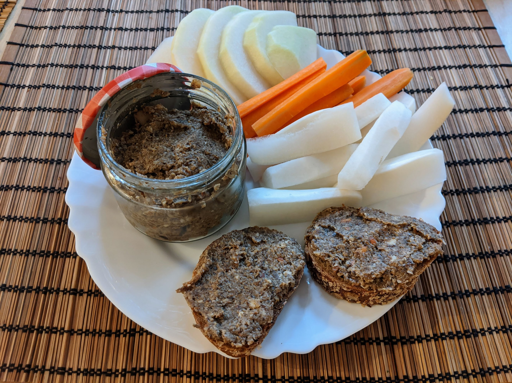

Pâté de champignons

Pour un gros pot de pâté :
- Un oignon
- 400g de champignons
- Une poignée de champignons stylés séchés, par exemple des cèpes
- 100g de noisettes
- Deux grosses gousses d'ail
- Une lichette de cognac
- Une lichette d'huile de noisette
- Une grosse lichette de vinaigre de cidre
- Une cuillère à café de piment d'Espelette
- Sel, poivre
- Éplucher et émincer l'oignon et l'ail, et faire revenir le tout au fond d'une poêle dans de l'huile d'olive.
- Pendant ce temps, laver les champignons et les couper grossièrement. Les ajouter dans la poêle et faire cuire jusqu'à ce que tout le jus des champignons soit évaporé. En fin de cuisson, ajouter le cognac et le laisser s'évaporer.
- Arrêter la cuisson, ajouter le reste des ingrédients, et mixer le tout, soit dans un bol de mixeur, ou avec un mixeur plongeant. Goûter, rectifier l'assaisonnement.
- Mettre en pot et réserver au frais, servir sur du pain grillé.